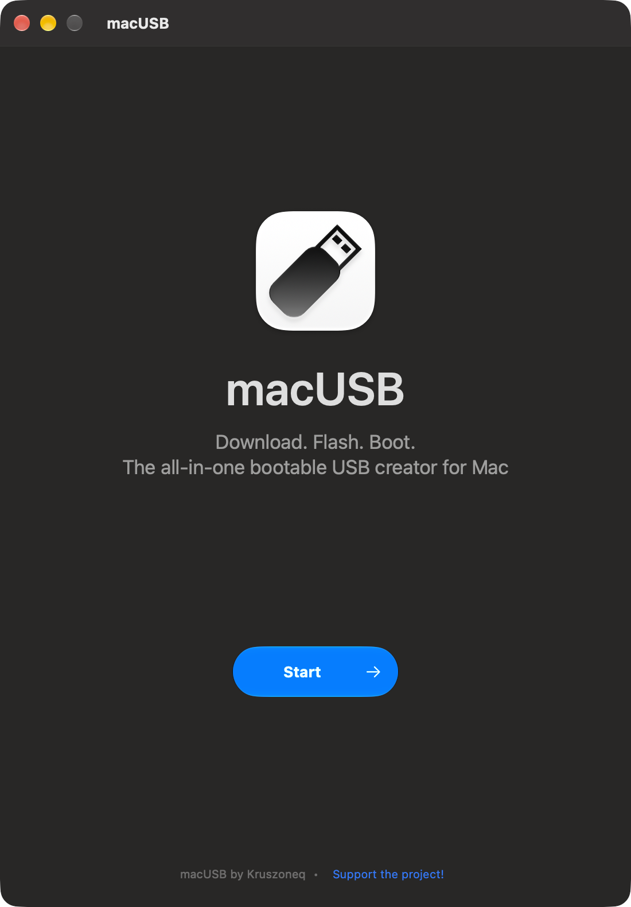
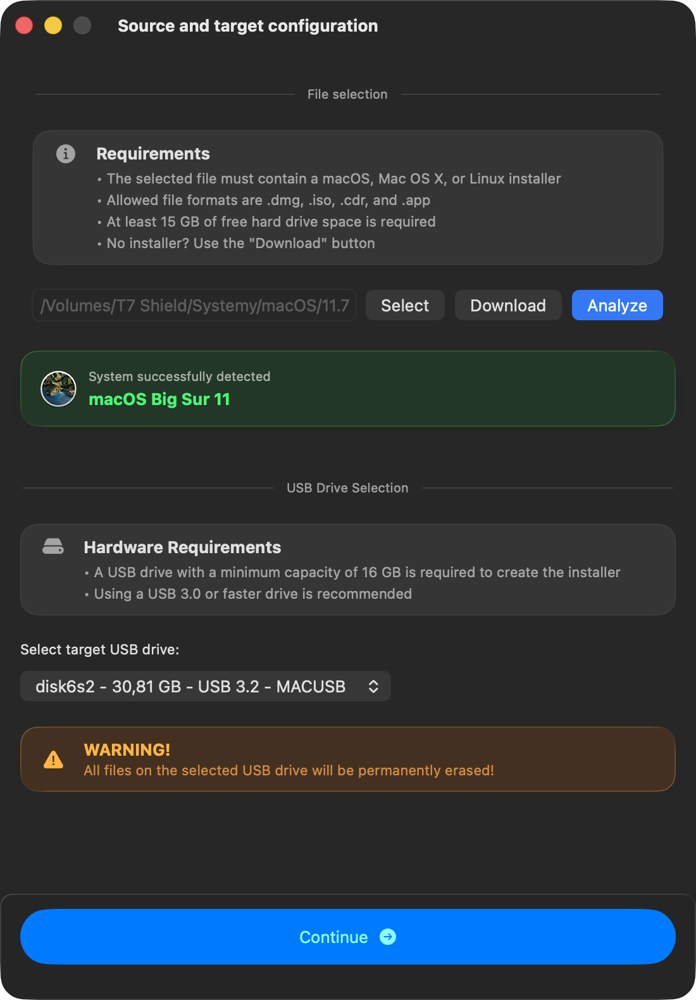
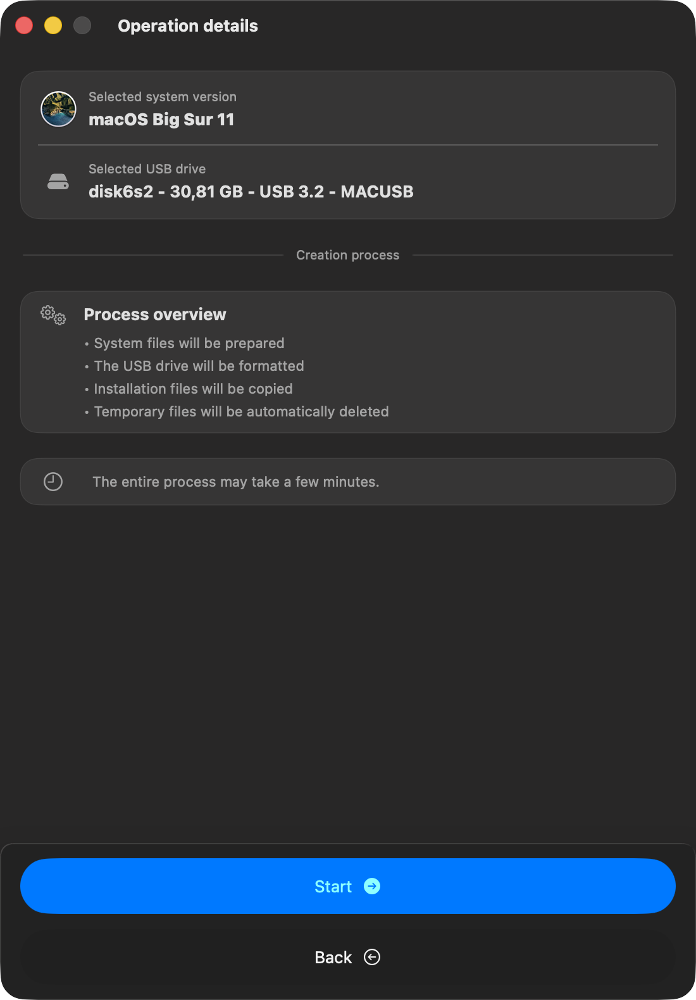
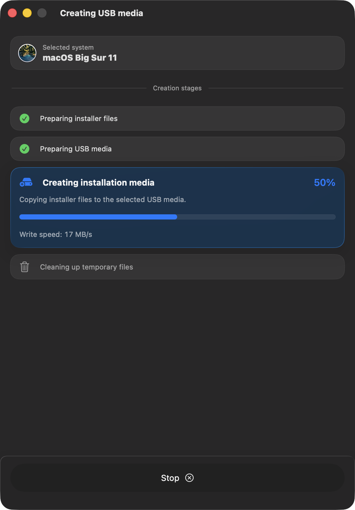
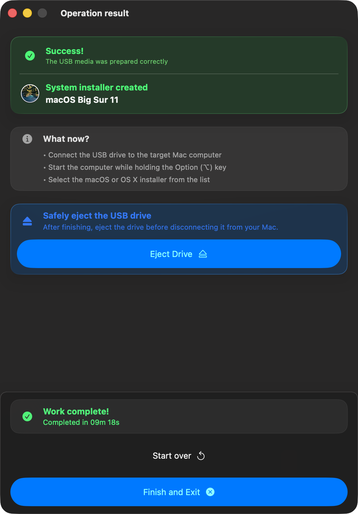
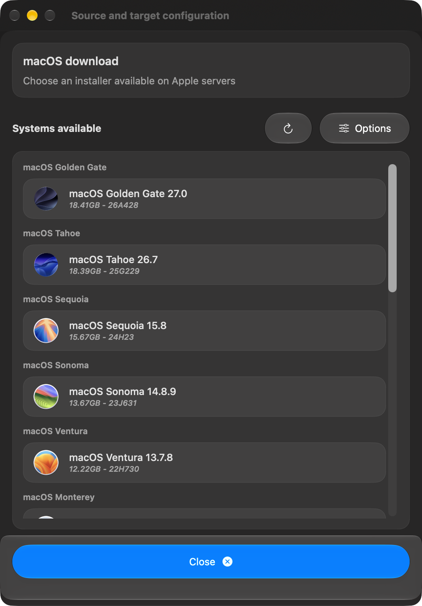
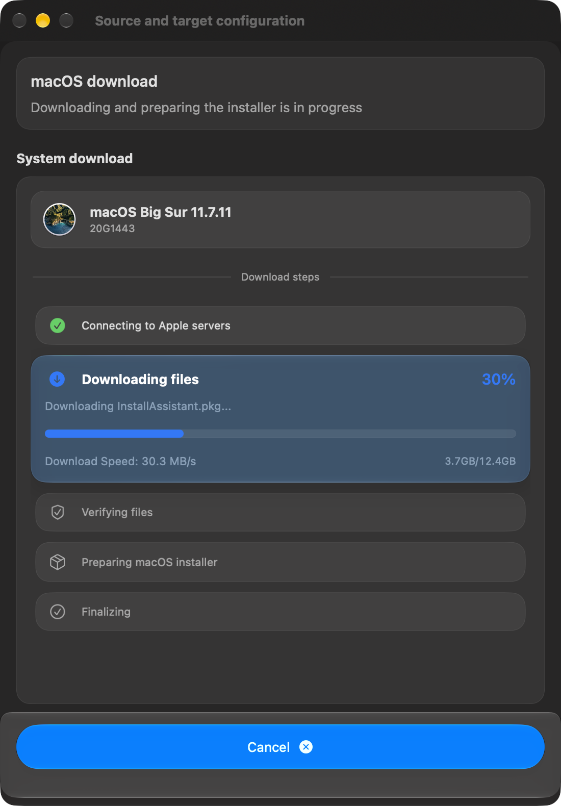
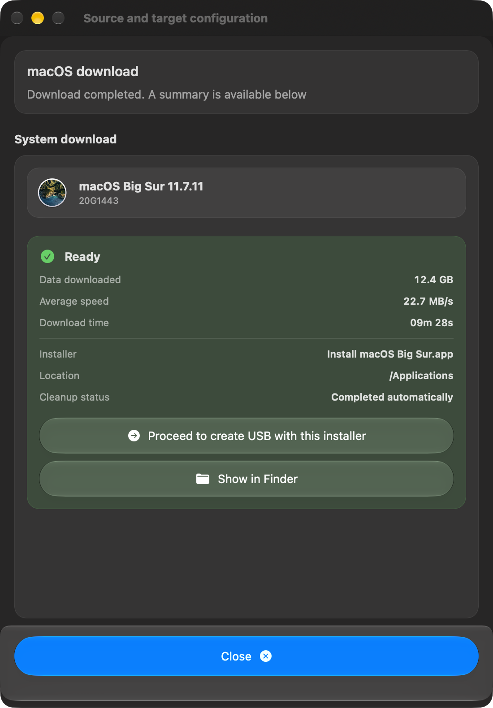

macUSB
Download. Flash. Boot. The all-in-one USB creator for Mac
brew install --cask macusb
From source file to bootable USB, made simple
Choose your source file and target USB drive, and macUSB takes care of the rest, simply and quickly.
The image is analyzed automatically, the best path is selected, and your bootable USB is created step by step.








No installer file? Download macOS directly
Don't have an installer yet? Pick a macOS version and let macUSB fetch the right installer from available Apple releases.
Track download progress, then move straight to USB creation in the same workflow.
Simple steps, reliable results, ready-to-boot media
Designed for real-world recovery and install scenarios, macUSB makes it easy to create bootable USB media with macOS or Linux without getting lost in technical complexity.
Fully open, always free
macUSB is fully open source and free, with the full code available on GitHub for complete transparency. You can report issues, suggest new features, and directly influence what macUSB builds next.